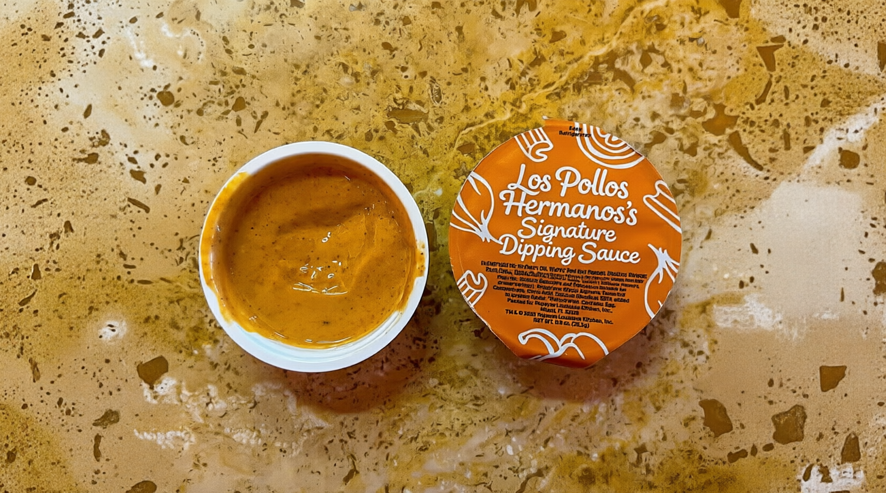

Signature Dipping Sauce

Los Pollos Hermanos's Signature Dipping Sauce
Taste the Southwest with the legendary secret sauce of the most famous
chicken restaurant. This
premium, creamy dipping sauce blends rich mayonnaise and tangy ketchup
with a bold kick of smoky paprika, garlic, and fiery cayenne pepper . Crafted to bring out the absolute best in crispy fried chicken, french
fries, and burgers, it delivers a smooth texture and a slow, addictive
heat. One taste, and you will know exactly why it is Gus Fring's pride and
joy.
Ingredients
-
½ cup mayonnaise (or Kewpie mayo for extra
richness)
- 2 tablespoons ketchup
-
1 tablespoon of sweet pickle juice or Buffalo sauce
- 1 teaspoon Worcestershire sauce
- ½ teaspoon garlic powder
- ½ teaspoon smoke paprika
-
¼ to ½ teaspoon cayenne pepper (adjust to
your preferred heat level)
Steps
-
Combine: Add all the ingredients to a small mixing bowl
or jar.
-
Mix: Whisk together thoroughly until the mixture
reaches a smooth, creamy consistency.
-
Chill: Cover the bowl and refrigerate for 30–60
minutes. This resting period is critical, as it allows the spices to
rehydrate and the flavors to fully meld together.
Home